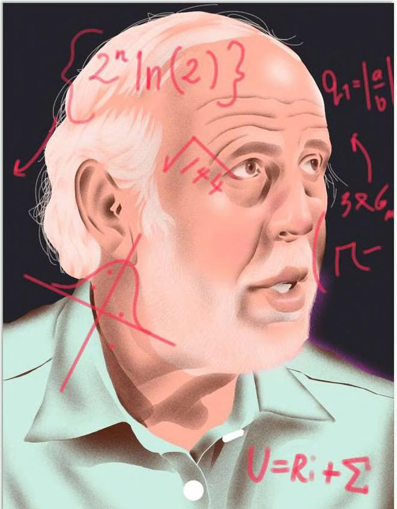

Và giả sử ông vẫn tiếp tục kiếm được khoản lợi nhuận đầu tư hàng năm bất tường mà ông có thể tạo ra (22% hàng năm), nhưng bỏ đầu tư và nghỉ hưu ở tuổi 60 để chơi gôn và dành thời gian cho các cháu của mình. ớc tính sơ bộ về giá trị tài sản ròng của ông ngày nay là bao nhiều? Không phải 84.5 tỷ đô la. 1.9 triệu đô la. hơn 99.9% so với giá trị tài sản ròng thực tế của ông ấy. ực tế, tắt cả thành công tài chính của Warren Buffett có thể được gắn liền với nền tảng tài chính mà ông đã xây dựng trong những năm dậy thì và tuổi ọ mà ông duy tì trong những năm cao tuổi. Kỹ năng của ông là đầu tư, nhưng bí quyết của ông ấy là thời gian. ó là cách hoạt động của lãi kép. Hãy nghĩ về điều này theo cách khác. Buffeit là nhà đầu tư giàu nhất mọi thời đại. Nhưng ông không thực sự là người vĩ đại nhất — ít nhất là không khi được đo lường bảng lợi nhuận trung bình hàng năm. im Simons, người đứng đầu quỹ đầu cơ Renaissance [echnologies, đã kiếm được lãi kép ở mức 66% hàng năm kể từ năm 1988. Không ai đến gần kỷ lục này. Như chúng ta vừa thấy, Buffett đã tăng khoảng 22% hàng năm, chỉ bảng một phần ba.
